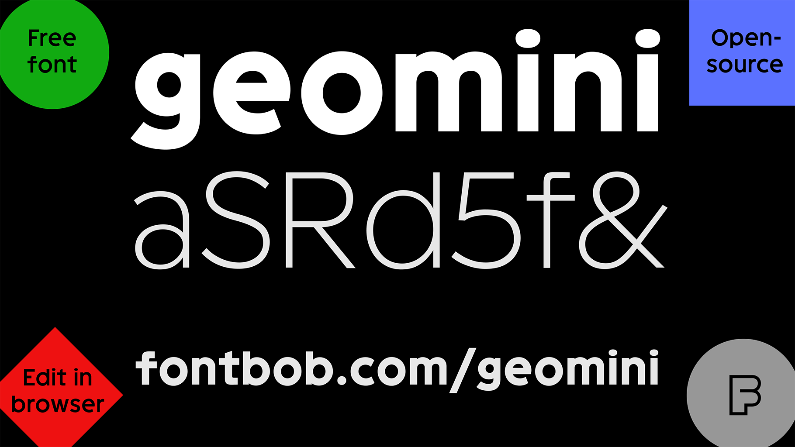
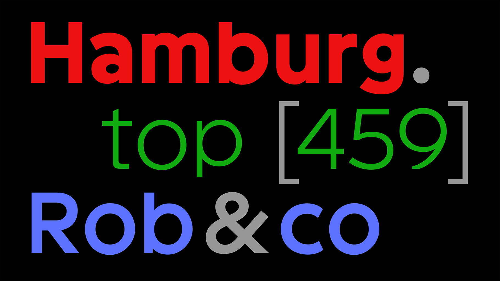
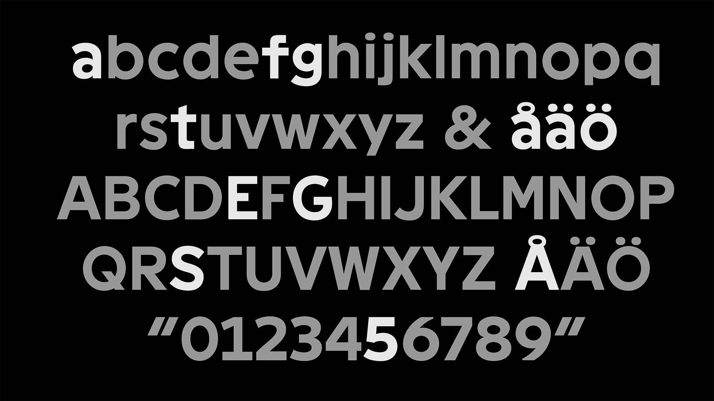
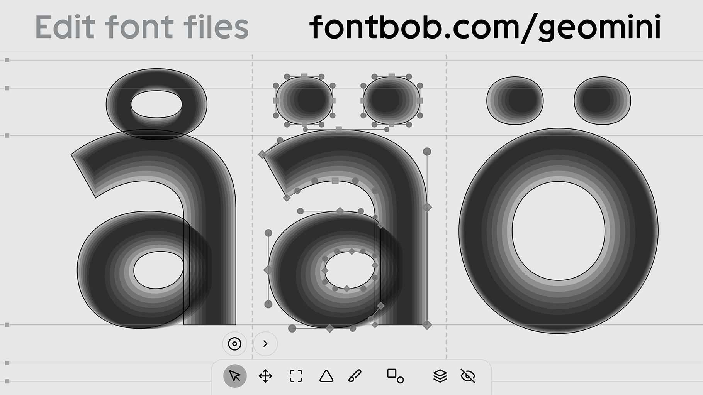

Geomini is a compact geometric font inspired by Swedish traffic signs. With its super high x-height, Geomini is perfect for text, branding and interfaces. This font is published by the FontBob team: FontBob is a font editor focused on making type design more accessible.
To contribute, see github.com/fontbob/geomini.



